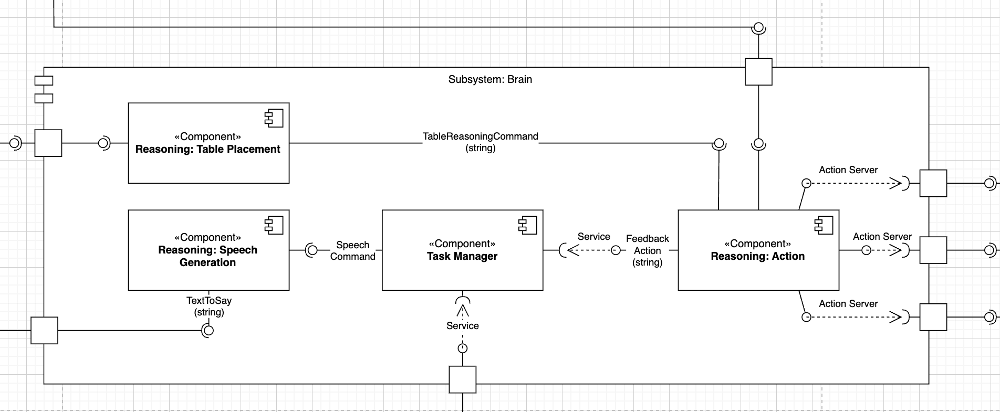

Subsystem Brain
What the “Brain” does
This layer converts intent (orders, table context, fleet status) into a sequence of concrete robot actions. It reasons about where to place a dish, when to speak, when to move and when to wait for another robot.
{kind=link}
Component roles
Reasoning Action – transforms a symbolic task into ordered ActionLib goals (base → arm → gripper).
Reasoning Table Placement – analyses the RGB-D map of a table and picks a free, stable coordinate for the plate or for clearing.
Task Manager – aggregates feedback, queries the
/robot_state_decisionservice and pushes the next task to the correct robot.Reasoning Speech Generation – decides when and what to announce to customers, then hands the sentence to the interaction layer.
ROS interfaces & KPIs
Topic / Service |
Type |
KPI / Note |
|---|---|---|
|
|
First waypoint < 0.5 m from target; update ≤ 500 ms |
|
|
Commands PLACE, CLEAR, INSPECT |
|
|
State change ≤ 200 ms after controller result |
|
|
Response ≤ 100 ms, 99.9 % success |
|
|
≤ 1 s after customer confirmed |
Implementation modules
Detailed API docs for each Brain component can be found below.
Brain Components